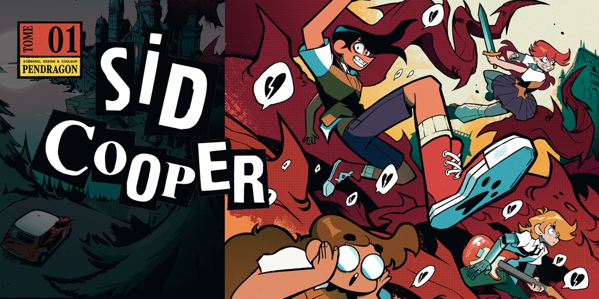

Sid Cooper T01
Pendragon, 2025
Sid Cooper est une bande-dessinée qui raconte l'histoire d'un garçon au nom éponyme qui vient de perdre sa mère. Envoyé par son père, qu'il connait à peine, dans une école perdue au fin fond de la campagne, Sid va devoir se reconstruire. L'orignalité de l'univers est portée par l'apparition d'énormes ronces qui détruisent tout sur leur passage. Dans cet internat, Sid va se faire un groupe d'amis et apprendre à revivre, à apprendre à aimer, se remettre à dessiner...
Un véritable coup de coeur, un univers bien particulier qui m'a directement parlé. J'ai été happé dans l'histoire à la seconde. J'adore les tranches de vie et Sid Cooper est une oeuvre qui raconte l'adolesence d'une excellente façon, qui parle du deuil d'une manière très délicate et de façon bien faite. Comme pour Super A j'ai qu'une envie c'est d'avoir la suite mais il va falloir prendre son mal en patience malheureusement.
Retour à l'accueil